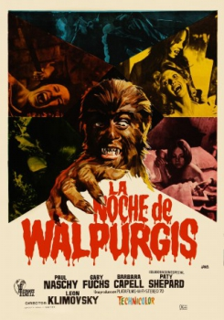
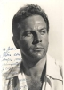

Also known as:La noche de Walpurgis (original title)
Country:Spain, 82 minutes
Spoken languages:Spanish
Genres:Horror
Director(s):León Klimovsky
Writer(s):Paul Naschy, Hans Munkel
Video Codec:Unknown
Number: 131


Certification:R
Storyline:
Elvira and her friend Genevieve travel through the French countryside in search of the lost grave of a medieval vampire, Countess Wandesa.
Cast: 
Medium: Original DVD,
Comments: Part of: 100 Greatest Horror Classics
Loaned: No
Aspect ratio: Unknown